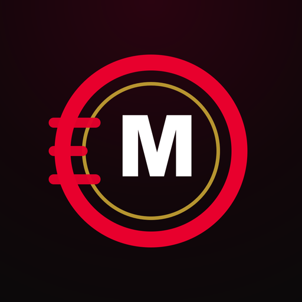

MOTO MANAGER
Motorcycle racing manager for Android
You are the team principal, not the rider. Run your team through full seasons: develop the bike, sign riders, deal with sponsors and make the calls that decide every race — live from the pit wall.
- Live races in TV view: overtakes, rain, red flags
- 9 eras to play, from 1996 to 2027
- Rider market, staff, budget, test rider and wildcards
- English, Italiano, Español, Português, Bahasa Indonesia